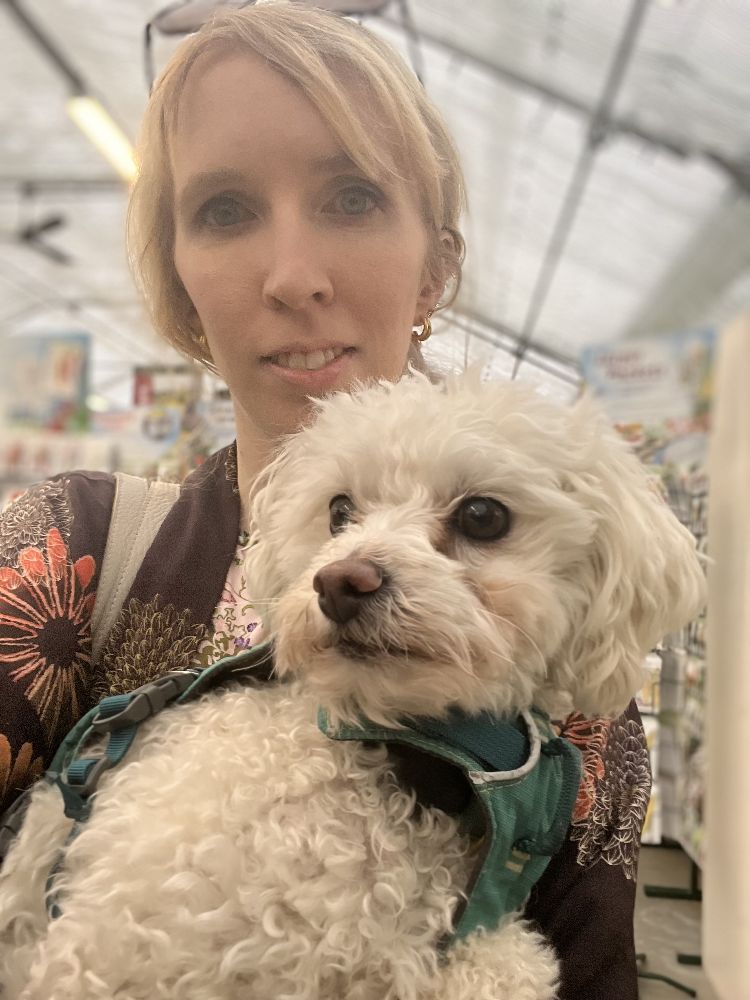

If you have found me and I am alone, please help! I am definitely lost.
I need daily medication to prevent me from getting very sick and dying. If I go without my medication for even a day or two, I start to feel very sick. I will lose my desire to eat and start vomiting regularly. Eventually I will start to have lots of diarrhea, often bloody. Stressful situations (like being lost) make my symptoms worse.
That's why I need your help!
Please contact my family ASAP at the phone numbers listed on my collar. You can also email my family at ifoundoliver@olivermeds.com
If you do not reach my family right away, please take me to a vet so they I can make sure I am OK while I wait for them. (Don't worry, my mom will pick up the tab!)
Thank you for helping me get back to my family!